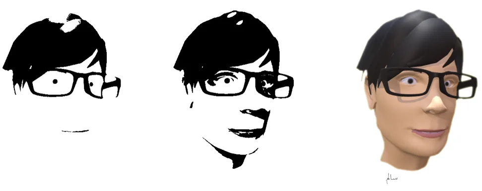
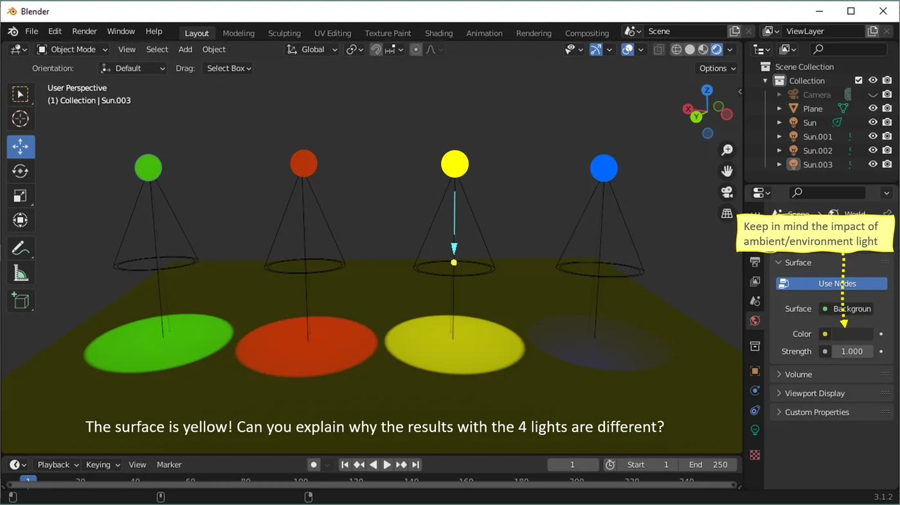
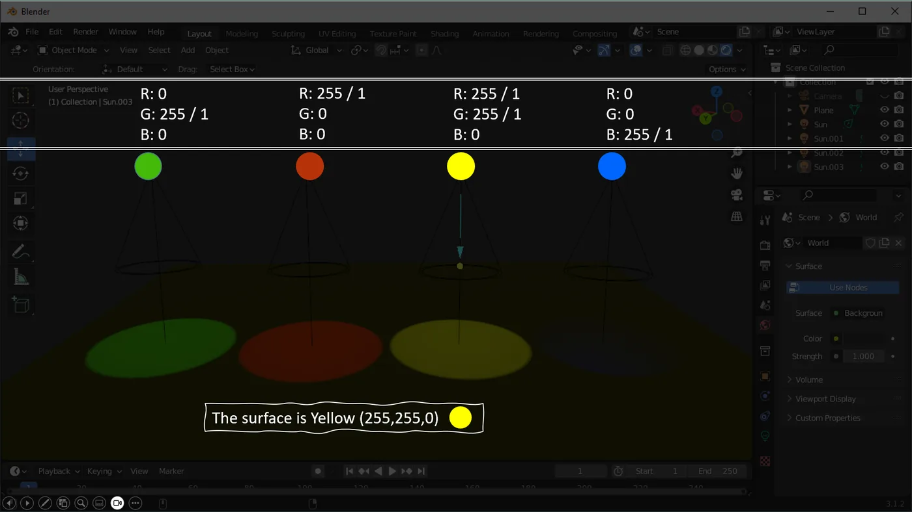
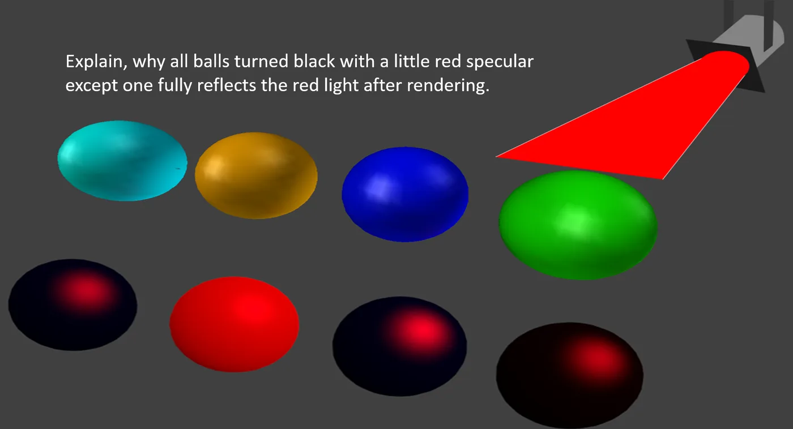
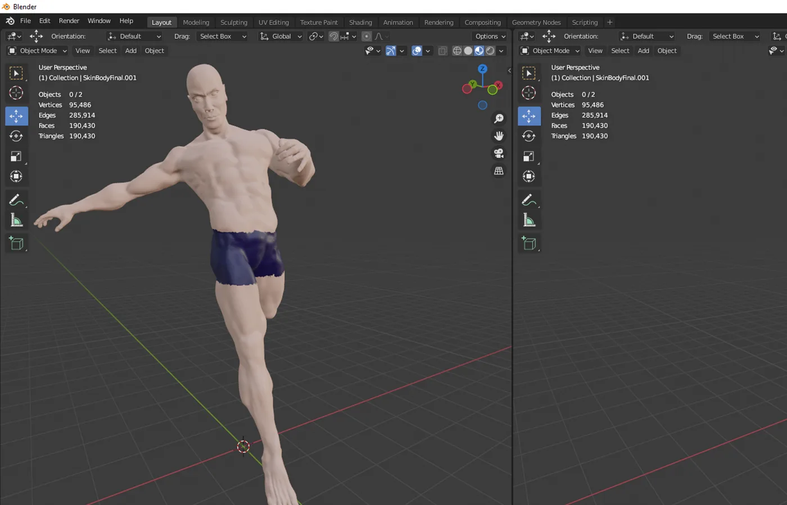
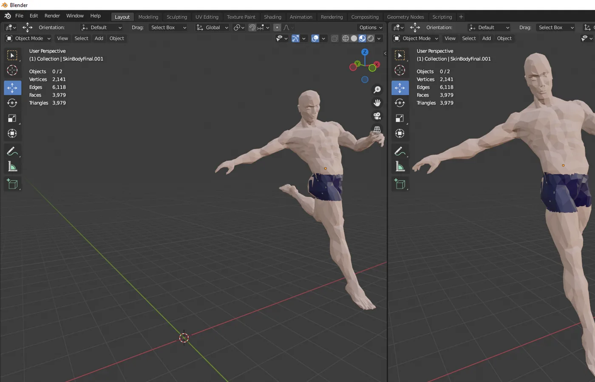
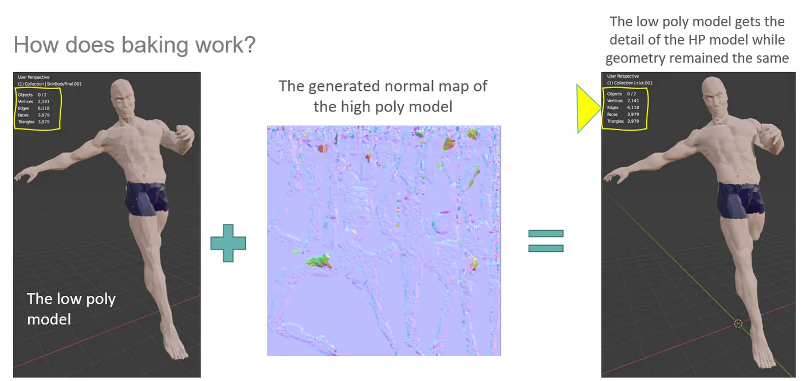

IT 280 · Computer Graphics and Multimedia · Week 12
Lighting, shading and rendering
How light turns models into convincing images: light sources, the ambient–diffuse–specular model, flat, Gouraud and Phong shading, shadows and global illumination, and real-time versus offline rendering.
After this week you can
- Explain how light and surface colours combine.
- Compare point, spot, directional, area and environment lights, and apply inverse-square falloff.
- Calculate ambient, diffuse and specular terms and explain the role of the normal and view direction.
- Compare flat, Gouraud and Phong shading.
- Explain shadows, ambient occlusion, global illumination and baking.
- Compare real-time and offline rendering, and light and render a scene in EEVEE and Cycles.
بعد هذا الأسبوع ستكون قادرًا على أن:
- تشرح كيف يجتمع لون الضوء ولون السطح.
- تقارن الأضواء النقطية والموجّهة والاتجاهية والمساحية والبيئية، وتطبّق قانون التربيع العكسي.
- تحسب حدود الضوء المحيطي والمنتشر والمرآوي وتشرح دور المتجه العمودي واتجاه النظر.
- تقارن التظليل المسطّح وتظليل غورو وتظليل فونغ.
- تشرح الظلال والإظلال المحيطي والإضاءة الشاملة والخَبز.
- تقارن التصيير الآني بغير الآني، وتضيء مشهدًا وتصيّره في EEVEE وCycles.
ترجمة عربية مساندة للشرح. المرجع هو النص الإنجليزي، وهو لغة الاختبارات والبرامج.
01 · Light and colour
Why lighting makes 3D look 3D
كرة مرسومة بلون واحد تبدو قرصًا. وما يخبر العين أنها مستديرة هو تغيّر سطوعها: مضاءة من جهة، وأغمق من الأخرى، مع بقعة لمعان. والرسامون يحاكون ذلك بالتظليل، والرسوميات الحاسوبية تحسبه.
نموذج الإضاءة يحسب لون نقطة على السطح من أربعة أشياء: الضوء (لونه وشدته وموضعه واتجاهه)، والمادة (لونها وخشونتها ومعدنيتها، الأسبوع 11)، واتجاه السطح (متجهه العمودي)، واتجاه النظر (اللمعان يتحرك حين تتحرك).
ولون الضوء ولون السطح يُضربان قناة بقناة. فالسطح الأحمر يعكس الضوء الأحمر ويمتصّ الأخضر والأزرق. سلّط عليه ضوءًا أخضر خالصًا: (0, 1, 0) × (1, 0, 0) = (0, 0, 0)، فيبدو أسود.
تحقّق من فهمك: تحت ضوء مسرح أحمر خالص، يبدو القميص الأبيض والقميص الأحمر متشابهين. لماذا؟
الإجابة: الأبيض يعكس القنوات الثلاث والأحمر يعكس الأحمر فقط. وتحت ضوء (1, 0, 0) لا يعود من كليهما إلا الأحمر.
ترجمة عربية مساندة للشرح. المرجع هو النص الإنجليزي، وهو لغة الاختبارات والبرامج.
A sphere drawn in one flat colour is a disc. What tells the eye it is round is how its brightness changes: lit on one side, darker on the other, with a highlight. Painters fake this with shading; computer graphics calculates it.
A lighting model (or illumination model) calculates the colour of a point on a surface from four things: the light (colour, intensity, position, direction), the material (colour, roughness, metalness, Week 11), the surface orientation (its normal) and the viewing direction (highlights move when you move).
Light colour and surface colour multiply, channel by channel. A red surface reflects red light and absorbs green and blue. Shine pure green light on it, (0, 1, 0) × (1, 0, 0) = (0, 0, 0), and it looks black. Shine yellow light (1, 1, 0) on a yellow surface and it looks yellow; blue light on the same surface gives black. Week 3’s additive RGB model is what the renderer computes with.



Under a pure red stage light, a white shirt and a red shirt look the same. Why?
White reflects all three channels and red reflects only red. Under red light (1, 0, 0) both return only the red channel, so both look red.
02 · Light sources
Types of light
- الضوء النقطي: يشعّ في كل الاتجاهات من نقطة، كمصباح مكشوف.
- الضوء الموجّه (الكشّاف): ضوء نقطي محصور في مخروط، بحافة ناعمة. للمسارح والمصابيح اليدوية وأضواء السيارات.
- الضوء الاتجاهي: أشعة متوازية من مسافة لا نهائية، بلا موضع بل اتجاه فقط؛ إنه الشمس، ولا يخفت مع المسافة.
- الضوء المساحي: ضوء من سطح (نافذة أو صندوق إضاءة)؛ وكلما كبر نعمت الظلال.
- الضوء البيئي: من السماء أو المحيط كله، غالبًا صورة HDRI بزاوية 360° تخزّن قيم سطوع حقيقية تتجاوز 0–1، فتضيء وتنعكس معًا.
- المواد الباعثة: أسطح متوهجة كالشاشات ولافتات النيون.
والضوء الحقيقي يخفت بمربع المسافة: ضعف البعد يعني ربع السطوع (الخفوت التربيعي العكسي). وتستخدمه Blender وUnity للأضواء النقطية والموجّهة والمساحية. والحد التربيعي في معاملات OpenGL القديمة هو هذا الخفوت الفيزيائي نفسه.
مثال محلول · الخفوت التربيعي العكسي
- مصباح يعطي 400 وحدة سطوع على طاولة على بعد 1 m.
- على بعد 2 m: 400 ÷ 2² = 100.
- على بعد 4 m: 400 ÷ 4² = 25.
- إبعاد الضوء إلى الضعف يحتاج أربعة أضعاف القدرة للسطوع نفسه.
ترجمة عربية مساندة للشرح. المرجع هو النص الإنجليزي، وهو لغة الاختبارات والبرامج.
- Point light: emits in all directions from one position, like a bare bulb. Blender: Point; Unity: Point.
- Spotlight: a point light limited to a cone, with a softness at the edge (Blender: Spot Size and Blend; Unity: Spot Angle). Used for stage lights, torches, car headlights.
- Directional light: parallel rays from infinitely far away, with no position, only a direction. The sun. It does not fade with distance. Blender: Sun; Unity: Directional.
- Area light: light from a surface (a window, a softbox). Larger lights give softer shadows. Blender: Area; in Unity mainly for baked lighting.
- Environment light: light from the whole sky or surroundings, often an HDRI image (a 360° photo storing real brightness values beyond 0–1). It lights and reflects at once, which is why product renders often use only an HDRI.
- Emissive materials: surfaces that glow, such as screens and neon signs.
Real light fades with the square of the distance: twice as far, a quarter as bright (inverse-square falloff, or attenuation). Blender and Unity use physically based falloff for point, spot and area lights. The old CPIT285 notes describe OpenGL’s constant, linear and quadratic attenuation factors; the quadratic term is this same physical falloff.
Worked example · inverse-square falloff
- A lamp gives 400 units of brightness on a table 1 m away.
- At 2 m: 400 ÷ 2² = 100.
- At 4 m: 400 ÷ 4² = 25.
- Moving a light twice as far needs four times the power for the same brightness: a common surprise when scaling a scene up.
03 · Reflection models
Ambient, diffuse and specular
نموذج الإضاءة الآني الكلاسيكي، الذي يُبنى عليه PBR، يجمع ثلاثة حدود:
- المحيطي: كمية ثابتة من الضوء في كل مكان، بديل رخيص للضوء المرتدّ في الغرفة. ووحده يجعل الجسم ظلًا مسطّحًا.
- المنتشر (لامبرت): ضوء يتشتّت بالتساوي في كل الاتجاهات من سطح مطفأ، ويعتمد على الزاوية بين المتجه العمودي N واتجاه الضوء L فقط: diffuse = max(N · L, 0) × light × surface. ولا يعتمد على موضع الناظر.
- المرآوي: بقعة اللمعان، وهي انعكاس الضوء نفسه؛ تعتمد على الناظر. وفي صيغة بلين–فونغ بالمتجه النصفي H بين L واتجاه النظر V: specular = max(N · H, 0)^shininess × light. والأس الكبير يعطي لمعانًا صغيرًا حادًا، والصغير لمعانًا واسعًا ناعمًا.
لون النقطة = محيطي + منتشر + مرآوي، لكل الأضواء. ومادة لامبرت تستخدم المحيطي والمنتشر فقط (الطباشير)، ومادة فونغ تضيف المرآوي (البلاستيك). وهذا نموذج glLight وglMaterial في ملاحظات CPIT285 القديمة. ويستبدل PBR «درجة اللمعان» بالخشونة ويضيف حفظ الطاقة وأثر فرينل، لكن فكرتي المنتشر والمرآوي باقيتان.
تحقّق من فهمك: كرة حمراء يضيئها ضوء أخضر فقط. ما لون بقعة اللمعان في هذا النموذج، وما لون باقي الكرة؟
الإجابة: اللمعان أخضر لأن المرآوي يعكس لون الضوء نفسه؛ والباقي أسود لأن السطح الأحمر يمتصّ الأخضر.
ترجمة عربية مساندة للشرح. المرجع هو النص الإنجليزي، وهو لغة الاختبارات والبرامج.
The classic real-time lighting model, still taught everywhere because PBR builds on it, adds three terms:
- Ambient: a constant amount of light everywhere, a cheap stand-in for light bounced around the room. Alone, it makes an object a flat silhouette.
- Diffuse (Lambert): light scattered equally in all directions by a matte surface. Its brightness depends only on the angle between the surface normal N and the direction to the light L: diffuse = max(N · L, 0) × light colour × surface colour. Facing the light (N · L = 1) is brightest; edge-on (0) is dark. It does not depend on where you look from.
- Specular: the highlight, the reflection of the light itself. It depends on the viewer: it is brightest when the view direction lines up with the mirror reflection of the light. In the Blinn–Phong form, using the half-vector H between L and the view direction V: specular = max(N · H, 0)shininess × light colour. A high shininess exponent gives a small, sharp highlight (polished); a low one, a broad soft highlight.
The colour of a point is ambient + diffuse + specular, summed over all lights. A Lambert material uses only ambient and diffuse (chalk, matte paint); a Phong material adds specular (plastic, varnish). This is the model of the old glLight and glMaterial calls in the CPIT285 notes. PBR (Week 11) replaces “shininess” with roughness and adds energy conservation and Fresnel, but the diffuse and specular ideas are the same.
Try it · lighting a sphere
Turn the terms on and off, change the colours and the shading method. The sphere is a low-poly mesh (12 × 24 faces).
A red ball is lit only by a green light. What colour is its specular highlight in this model, and what colour is the rest of the ball?
The highlight is green, because specular reflects the light’s own colour (white specular colour × green light); the rest is black, because the red surface absorbs green.
04 · Shading methods
Flat, Gouraud and Phong shading
نموذج الإضاءة يعطي اللون عند نقطة، وطريقة التظليل تحدّد أين يُحسب على شبكة المثلثات:
- التظليل المسطّح: مرة لكل وجه بمتجه الوجه العمودي؛ فيظهر كل وجه بلون واحد. مناسب للأجسام المضلّعة (الجواهر، الأسلوب منخفض المضلعات).
- تظليل غورو: مرة لكل رأس بـمتجهات الرؤوس العمودية (متوسط متجهات الأوجه المحيطة)، ثم يُستوفى اللون عبر الوجه. ناعم ورخيص، لكنه يفوّت اللمعان الواقع داخل الوجه أو يلطّخه.
- تظليل فونغ: تُستوفى المتجهات العمودية عبر الوجه وتُحسب الإضاءة لكل بكسل في مظلِّل القطع. اللمعان صحيح، وتستخدمه كل المحرّكات الحديثة.
في Blender: Shade Smooth يستخدم متجهات الرؤوس المستوفاة، وShade Flat متجهات الأوجه، وShade Auto Smooth يُبقي الحواف الحادة فوق زاوية معيّنة (30° افتراضيًا) مسطّحة وينعّم الباقي، وهو المناسب لنماذج الأسطح الصلبة كالسيف في اللاب.
استخدام Shade Smooth على نموذج صندوقي بلا حواف حادة؛ فتظهر تدرجات داكنة وتبدو الزوايا ذائبة. استخدم Shade Auto Smooth.
ترجمة عربية مساندة للشرح. المرجع هو النص الإنجليزي، وهو لغة الاختبارات والبرامج.
A lighting model gives the colour at a point. A shading method decides where it is computed on a triangle mesh:
- Flat shading: once per face, with the face normal. Every face is one colour, so the facets show. Right for faceted objects (a gem, low-poly style), wrong for smooth ones.
- Gouraud shading: once per vertex, with vertex normals (the average of the surrounding face normals), then colours are interpolated across the face. Smooth and cheap, the default of old fixed-function OpenGL; but a highlight that falls inside a face is missed or smeared, as the demo shows.
- Phong shading: the normals are interpolated across the face and the lighting is computed for every pixel in the fragment shader. Highlights are correct. All modern engines shade per pixel. (Phong shading, the interpolation, is different from the Phong reflection model above; both are named after Bui Tuong Phong.)
In Blender, uses interpolated vertex normals, uses face normals, and keeps sharp edges above an angle (30° by default) flat while smoothing the rest: right for most hard-surface models such as the sword in the lab.
Using Shade Smooth on a box-like model without sharp edges. The large faces get dark gradients and the corners look melted. Use Shade Auto Smooth, or mark sharp edges.
05 · Shadows and indirect light
Shadows, ambient occlusion and global illumination
النموذج السابق لا يعرف إن كان شيء يحجب الضوء، ويتجاهل الضوء المرتدّ عن الأسطح الأخرى؛ وكلاهما مهم جدًا للواقعية.
- الظلال: تستخدم المحرّكات الآنية خرائط الظلال: يُصيَّر المشهد أولًا من منظور الضوء مع تخزين العمق، ثم يتحقق كل بكسل إن كان شيء أقرب إلى الضوء منه. ودقة الخريطة تحدّد حدّة الظل وتعرّجه.
- الإظلال المحيطي: يُعتم الثنايا ونقاط التلامس التي يصلها قليل من الضوء.
- الإضاءة الشاملة: كل الضوء الواصل بشكل غير مباشر؛ فضوء الشمس المرتدّ عن سجادة حمراء يصبغ الجدار الأبيض بالوردي. وهي مكلفة، وهي أكبر فرق بين التصيير الآني وغير الآني.
وكثيرًا ما «تخبز» المحرّكات الإضاءة الشاملة والإظلال المحيطي في خرائط إضاءة تُحسب مرة ببطء للأجسام الثابتة ثم تُقرأ كل إطار. وهي فكرة الخَبز نفسها في اللاب، لكن للضوء.
تحقّق من فهمك: كرسي على أرضية يبدو كأنه يطفو مع أن أرجله تلمس الأرض. ما الناقص غالبًا؟
الإجابة: ظلال التلامس والإظلال المحيطي عند نقاط التقاء الأرجل بالأرض.
ترجمة عربية مساندة للشرح. المرجع هو النص الإنجليزي، وهو لغة الاختبارات والبرامج.
The lighting model so far looks only at the surface, the light and the viewer. It does not know if something blocks the light, and it ignores light that bounces off other surfaces. Both matter enormously for realism.
- Shadows. Real-time engines use shadow maps: the scene is first rendered from the light’s point of view, storing depth; then each pixel checks whether something was closer to the light. Shadow-map resolution sets how sharp and how jagged shadows are.
- Ambient occlusion (AO) darkens creases and contact points that little light can reach, such as corners and where an object meets the floor. It replaces part of the flat ambient term.
- Global illumination (GI) is all the light that arrives indirectly: sunlight bouncing off a red carpet tints a white wall pink, and a room is lit even in places the sun never touches. It is expensive to compute and is where offline and real-time rendering differ most.
Real-time engines often bake GI and AO into lightmaps: textures computed once, slowly, for static objects, then read cheaply every frame. This is the same baking idea as the normal map in the lab, applied to light.



A chair placed on a floor looks as if it is floating, although its legs touch the floor. What is most likely missing?
Contact shadows and ambient occlusion where the legs meet the floor; without the darkening at the contact points the eye reads the chair as hovering.
06 · Real-time and offline
Real-time versus offline rendering
عرّف الأسبوع الثامن التنقيط وتتبّع الأشعة. وعمليًا يحدّدان نوعين من محرّكات التصيير (الجدول في النص الإنجليزي):
- الآني: نحو 16 ms للإطار؛ تنقيط مع حيل المظلِّلات والإضاءة المخبوزة، وتتبّع أشعة بالعتاد لبعض المؤثرات. للألعاب والواقع الافتراضي والتطبيقات التفاعلية. أمثلة: Unity وUnreal وEEVEE.
- غير الآني: ثوانٍ إلى ساعات للإطار؛ تتبّع المسارات بأشعة كثيرة لكل بكسل ترتدّ في المشهد. للأفلام وصور المنتجات والعمارة. أمثلة: Cycles وArnold وRenderMan.
ومع قلة العينات لكل بكسل تظهر الصورة محبّبة (ضجيج)؛ وأربعة أضعاف العينات تنصّف الضجيج. ومزيلات الضجيج تنظّف صورة صُيّرت بعينات أقل. ومنذ Blender 4.2 يستخدم EEVEE تتبّع أشعة في فضاء الشاشة فصار أقرب إلى Cycles، لكن Cycles يبقى المرجع الفيزيائي.
إدارة الألوان: يحسب المصيّر قيم سطوع أعلى بكثير من 1، وتحويل العرض يحوّلها للشاشة كتعريض الكاميرا. والافتراضي في Blender منذ 4.0 هو AgX؛ اضبط التعريض هناك لا بتعتيم كل الأضواء.
مثال محلول · زمن تصيير رسوم متحركة
- لقطة 10 ثوانٍ بـ24 إطارًا في الثانية = 240 إطارًا.
- Cycles بـ512 عينة: 90 s للإطار، أي 240 × 90 s = 6 ساعات.
- بـ128 عينة مع مزيل الضجيج: نحو 25 s، أي ساعة و40 دقيقة تقريبًا.
- EEVEE قد يحتاج 2 s للإطار، أي 8 دقائق، بضوء غير مباشر أقل دقة.
ترجمة عربية مساندة للشرح. المرجع هو النص الإنجليزي، وهو لغة الاختبارات والبرامج.
Week 8 introduced rasterization and ray tracing. In practice they define two kinds of renderer:
| Real-time | Offline | |
|---|---|---|
| Time per frame | ≈ 16 ms (60 fps) or 33 ms (30 fps) | Seconds to hours |
| Main technique | Rasterization + shader tricks (shadow maps, screen-space effects, baked lighting); hardware ray tracing for some effects | Path tracing: many rays per pixel, bouncing through the scene |
| Indirect light | Approximated or baked | Computed physically |
| Used for | Games, VR, interactive apps, previews | Film, product renders, architecture stills |
| Examples | Unity (URP, HDRP), Unreal, Blender EEVEE | Blender Cycles, Arnold, RenderMan, V-Ray |
Path tracing follows light backwards from the camera: each ray bounces randomly off surfaces until it reaches a light, and many such paths per pixel are averaged. With few samples per pixel, the image is grainy (noise); more samples reduce noise but take longer (four times the samples halve the noise). Denoisers (such as OpenImageDenoise and OptiX in Cycles) clean up an image rendered with fewer samples, which is how short render times are possible today.
In Blender, EEVEE is the real-time engine and Cycles the path tracer; the same scene and materials work in both. Since Blender 4.2, EEVEE uses screen-space ray tracing and global-illumination techniques, so it is much closer to Cycles than older versions, but Cycles remains the reference for physically correct light. The lines are blurring: games now use hardware ray tracing for reflections and GI, and film studios preview shots in real time.
Colour management. Renderers compute brightness values far above 1 (the sun is thousands of times brighter than a lamp). A view transform maps them to the screen, like a camera’s exposure. Blender’s default since 4.0 is AgX, which rolls bright colours smoothly towards white instead of clipping them; set exposure there, not by darkening every light.
Worked example · render time for an animation
- A 10-second shot at 24 fps has 240 frames.
- Cycles takes 90 s per frame at 1080p with 512 samples: 240 × 90 s = 21 600 s = 6 hours.
- With 128 samples plus the denoiser: about 25 s per frame, so 240 × 25 s ≈ 1 hour 40 minutes.
- EEVEE might take 2 s per frame, 8 minutes in total, with less accurate indirect light: the classic quality–time trade-off.
07 · Lighting a scene
Practical lighting: three-point lighting and HDRIs
يضيء المصوّرون موضوعهم بـالإضاءة ثلاثية النقاط، وتصلح للأجسام ثلاثية الأبعاد أيضًا:
- الضوء الرئيسي: الأقوى، بزاوية نحو 45° من الجانب والأعلى؛ يحدّد الشكل والظل الرئيسي.
- الضوء المالئ: في الجهة الأخرى، أضعف (ثلث إلى نصف الرئيسي) وأكبر، يليّن الظلال.
- الضوء الخلفي: خلف الموضوع باتجاه الكاميرا، يحدّد حوافه ويفصله عن الخلفية.
الأضواء المساحية تعطي ضوءًا ناعمًا، والصغيرة ضوءًا حادًا دراميًا. ولنتيجة طبيعية سريعة أضئ المشهد بـHDRI في إعدادات World ثم أضف ضوءًا رئيسيًا. وفي OpenGL الحديثة يصبح موضع الضوء ولونه متغيّرات موحّدة، ويحسب مظلِّل القطع النموذج بنحو عشرة أسطر.
المشروع الثالث (10%): أصل أو مشهد ثلاثي الأبعاد مكسو بالخامات ومضاء: نموذجك الخاص بإحداثيات UV ومواد PBR (الأسبوع 11)، مضاءً ومصيّرًا (هذا الأسبوع)، ومصدّرًا بصيغة glTF. سلّم ملف .blend وملف .glb وصورتين مصيّرتين (EEVEE وCycles) وسجل الأصول واستخدام الذكاء الاصطناعي على Blackboard وفق وصف المشروع.
ترجمة عربية مساندة للشرح. المرجع هو النص الإنجليزي، وهو لغة الاختبارات والبرامج.
Photographers and film crews light a subject with three-point lighting, and it works for 3D objects too:
- Key light: the main, strongest light, about 45° to the side and above. It defines the shape and casts the main shadow.
- Fill light: on the other side, weaker (often a third to a half of the key) and larger, softening the shadows without removing them.
- Rim (back) light: behind the subject, aimed towards the camera, outlining its edges to separate it from the background.
Use area lights for soft, flattering light and small or sun lights for hard, dramatic light. Warm key with cool fill (amber and blue, as in this course’s palette) is a classic contrast. For quick, natural results, light the scene with an HDRI in the World settings, then add a key light for shape. Free HDRIs under CC0 are available from Poly Haven.
Old fixed-function code set lights with glLightfv(GL_LIGHT0, …) and glEnable(GL_LIGHTING). In modern OpenGL the light position and colour are uniforms, and the fragment shader computes the model itself, typically ten lines of GLSL. LearnOpenGL’s Basic Lighting chapter extends the Week 10 lab program this way.
Project 3 (10%) is a textured, lit 3D asset or scene: your own model, UV-mapped with PBR materials (Week 11), lit and rendered (this week), and exported as glTF. Submit the .blend file, the .glb, two rendered images (EEVEE and Cycles) and your asset and AI-use log on Blackboard, following the project brief.
Summary
What to remember
الأسبوع الثاني عشر في تسع نقاط
- نموذج الإضاءة يحسب اللون من الضوء والمادة والمتجه العمودي واتجاه النظر؛ ولونا الضوء والسطح يُضربان قناة بقناة.
- أنواع الأضواء: نقطي، وموجّه، واتجاهي، ومساحي، وبيئي، وأسطح باعثة؛ والضوء يخفت بمربع المسافة.
- المحيطي ثابت؛ والمنتشر max(N · L, 0)؛ والمرآوي max(N · H, 0)^shininess ويعتمد على الناظر.
- المسطّح لكل وجه، وغورو لكل رأس، وفونغ لكل بكسل.
- خرائط الظلال والإظلال المحيطي والإضاءة الشاملة تضيف أكثر الواقعية.
- التصيير الآني بالمللي ثانية وبالتقريب؛ وتتبّع المسارات غير الآني يحسب الضوء فيزيائيًا.
- عينات أكثر = ضجيج أقل وزمن أطول؛ ومزيلات الضجيج تختصر ذلك.
- الخَبز يخزّن النتائج المكلفة (تفاصيل المتجهات العمودية، الإضاءة) في خامات.
- الإضاءة ثلاثية النقاط: رئيسي ومالئ وخلفي؛ وتحويل العرض في Blender هو AgX.
ترجمة عربية مساندة للشرح. المرجع هو النص الإنجليزي، وهو لغة الاختبارات والبرامج.
Week 12 in nine points
- A lighting model computes colour from the light, the material, the normal and the view direction; light and surface colours multiply per channel.
- Light types: point, spot, directional (sun), area, environment (HDRI) and emissive surfaces; real light falls off with the square of distance.
- Ambient is constant; diffuse (Lambert) = max(N · L, 0); specular (Blinn–Phong) = max(N · H, 0)shininess and depends on the viewer.
- Flat shading per face, Gouraud per vertex, Phong per pixel; modern engines shade per pixel.
- Shadows (shadow maps), ambient occlusion and global illumination add most of the realism.
- Real-time rendering rasterizes in milliseconds with approximations; offline path tracing takes seconds to hours and computes light physically.
- More samples mean less noise but longer renders; denoisers shorten the trade-off.
- Baking stores expensive results (normal detail, lighting) in textures for real-time use.
- Three-point lighting: key, fill and rim; an HDRI gives quick natural light; Blender’s view transform is AgX.
Before the quiz
Common mistakes to avoid
| Mistake | Why it is wrong | Do this instead |
|---|---|---|
| Lighting with ambient only, or a single light straight from the camera | Flat, shapeless objects | Key light from the side, plus fill and rim |
| Fixing a dark scene by raising every light | Blown-out highlights, flat lighting | Adjust exposure in the view transform |
| Shade Smooth on hard-surface models | Dark gradients, melted corners | Shade Auto Smooth or sharp edges |
| Rendering final frames with too few samples and no denoiser | Grainy images | Raise samples or enable denoising |
| Baking with the low-poly not selected last | Nothing bakes, or the wrong object bakes | Select high-poly, then Shift-click low-poly (active) |
| Baked normal map left as sRGB | Wrong lighting on the low-poly | Set the baked image to Non-Color |
Check yourself
6 questions, marked on the page
Lab 12
Baking a normal map, lighting and rendering
يعيد هذا اللاب استخدام لاب الخَبز السابق ويوسّعه: تخبز تفاصيل سيف عالي المضلعات في خريطة متجهات عمودية لنسخته منخفضة المضلعات، فيحتفظ النموذج الجاهز للألعاب بمظهر النموذج المفصّل، ثم تضيئه بثلاث نقاط وتقارن تصيير EEVEE الآني بتصيير Cycles.
| ما تحتاجه | Blender 4.x أو 5.x، وحساب Sketchfab، والملف HP LP Sword.zip الذي يوفّره المحاضر على Blackboard. |
| ما ستسلّمه | رابط مستودعك (فيه labs/lab12 بملف Blender وخريطة Sword_Normal.png وصورتين مصيّرتين ولقطات وnotes.md) ورابط Sketchfab. |
| التقييم | جدول التقييم في نهاية القسم (10 درجات، CLO 2.3). |
أجزاء اللاب
الجزء A · استورد السيفين وافحصهما (10 دقيقة)
استورد ملفي FBX وسجّل عدد المثلثات في كل منهما والنسبة بينهما.
نقطة التحقق: السيفان مستوردان وعدد المثلثات مسجّل.
الجزء B · جهّز السيف منخفض المضلعات (10 دقيقة)
تحقّق من إحداثيات UV نظيفة، وطبّق Shade Auto Smooth، وأنشئ صورة 2048 فارغة باسم Sword_Normal بفضاء Non-Color في عقدة Image Texture محدّدة غير موصولة.
نقطة التحقق: سيف مفكوك وصورة جاهزة لاستقبال الخَبز.
الجزء C · اخبز خريطة المتجهات العمودية (25 دقيقة)
في Cycles اختر Bake Type: Normal، وحدّد السيف عالي المضلعات ثم منخفضها ليكون النشط، وفعّل Selected to Active مع Extrusion نحو 0.02، ثم Bake، واحفظ الصورة.
نقطة التحقق: خريطة محفوظة مخبوزة من العالي إلى المنخفض.
الجزء D · استخدم الخريطة (10 دقيقة)
اربط الصورة عبر عقدة Normal Map، وأخفِ السيف العالي، وقارن بلقطتين مع الخريطة وبدونها.
نقطة التحقق: سيف منخفض المضلعات يبدو كالعالي.
الجزء E · أضئ وصيّر: EEVEE مقابل Cycles (25 دقيقة)
أضف أرضية وكاميرا وإضاءة ثلاثية النقاط بأضواء مساحية، ثم صيّر بـEEVEE ثم بـCycles (128 عينة مع إزالة الضجيج)، وسجّل الأزمنة وقارن.
نقطة التحقق: صورتان مصيّرتان ومقارنة قصيرة.
الجزء F · صدّر وارفع وسلّم (10 دقيقة)
صدّر السيف المنخفض فقط بصيغة .glb وارفعه إلى Sketchfab، ثم ارفع التغييرات وسلّم الروابط. لا ترفع السيف العالي أبدًا.
اقرأ هدف كل جزء هنا بالعربية، ثم نفّذ الخطوات المرقّمة بالإنجليزية كما هي، لأن أسماء القوائم والأزرار في البرامج بالإنجليزية. إذا تعثّرت فابقَ في وقت الدعم (آخر 30 دقيقة) ليساعدك المحاضر.
ترجمة عربية مساندة للشرح. المرجع هو النص الإنجليزي، وهو لغة الاختبارات والبرامج.
This lab reuses and extends the course’s earlier baking lab. You bake the detail of a high-poly sword into a normal map for its low-poly version, so a game-ready model keeps the look of the detailed one, then light it with three-point lighting and compare a real-time render (EEVEE) with a path-traced one (Cycles).
Part A · Import and inspect the two swords
10 min- Download HP LP Sword.zip (provided by the instructor on Blackboard) and extract it into . It holds the same sword twice in FBX format: a high-poly (HP) version and a low-poly (LP) version.
- In a new Blender file, delete the cube and import both: . Save as .two swords in the same place, one on top of the other.
- Turn on and select each sword in turn. Record the triangle count of each in notes.md, and the ratio between them.the HP sword with many times more triangles than the LP.
Checkpoint. Both swords imported; triangle counts recorded.
Part B · Prepare the low-poly sword
10 min- Select the LP sword. Open the workspace and check that it has a clean UV layout with no overlapping islands. If not, mark seams along the edges of the blade and the handle and (Week 11).separate, non-overlapping islands.
- Right-click › on the LP sword.
- Give the LP sword a new material. In the Shading workspace add an Image Texture node, click New, name it Sword_Normal, size 2048 × 2048, untick Alpha, and press OK. Set its colour space to Non-Color. Leave this node selected and do not connect it yet: Blender bakes into the selected Image Texture node.
Checkpoint. An unwrapped LP sword with an empty 2048 image ready to receive the bake.
Part C · Bake the normal map
25 min- In set Render Engine to Cycles (baking uses Cycles). In the Bake panel set Bake Type to Normal, Space Tangent.
- In Object mode click the HP sword, then Shift-click the LP sword so it is active (selected last). Tick Selected to Active and set Extrusion to about 0.02 (the distance rays start outside the LP surface; use only if needed).
- Press Bake and wait for the progress bar. In the Image Editor the Sword_Normal image fills with light blue-purple islands showing the HP detail.a blue-purple normal map with the sword’s engravings visible.
- If parts are missing or show red and black blotches, the rays missed the HP surface: raise Extrusion a little (0.05, 0.1) and bake again. Note what you tried in notes.md.
- Save the image: → labs/lab12/Sword_Normal.png. An unsaved baked image is lost when Blender closes.Sword_Normal.png on disk.
Checkpoint. A saved normal map baked from HP to LP.
Part D · Use the normal map
10 min- Connect Sword_Normal (Non-Color) → Normal Map node → Normal of the Principled BSDF. Give the blade Metallic 1 and Roughness about 0.3.
- Hide the HP sword (H). In Material Preview, compare the LP sword with and without the normal map (mute the Normal Map node with M).the LP sword showing the engraved detail of the HP sword with the low triangle count.
- Take a screenshot of each state for notes.md.
Checkpoint. An LP sword that looks like the HP one.
Part E · Light and render: EEVEE versus Cycles
25 min- Add a ground plane and a camera framing the sword. Set up three-point lighting with area lights: a key light (about 45° up and to the side), a weaker, larger fill light on the other side, and a rim light behind. Make the key warm (slightly amber) and the fill cool.a clearly shaped sword with soft shadows and a bright edge.
- Render with EEVEE (, F12). Note the render time shown in the image window, then save as labs/lab12/eevee.png.
- Switch to Cycles. Set Max Samples to 128 and tick Denoise. Render, note the time, and save as cycles.png.
- In notes.md compare the two images: shadows, reflections, contact darkening and render time. Which would you use for a game asset preview, and which for a portfolio still?
Checkpoint. Two rendered images and a short comparison.
Part F · Export, upload and submit
10 min- Select only the LP sword. Apply transforms () and export with Include › Selected Objects. Never upload the HP sword: the point of baking is that the LP looks like it.sword_lp.glb.
- Upload sword_lp.glb to Sketchfab and check that the normal map appears in the material settings.
- Commit with the renders, screenshots, Sword_Normal.png and notes.md; push; submit the repository and Sketchfab links on Blackboard.
Minutes 90–120 are support time. If you are not finished, stay: the instructor works with you one-to-one until you submit. If you are finished, check a classmate’s work against the rubric below, then you may leave.
Before you submit
The ticks stay on this page only; they are for you.
If something goes wrong
| Problem | Why it happens | Fix |
|---|---|---|
| “No active image found” | The Image Texture node is not selected | Click the Sword_Normal node in the LP material, then bake |
| “No valid selected objects” | Selection order wrong | Click HP first, then Shift-click LP so LP is active |
| Red/black blotches in the bake | Rays miss the HP surface | Raise Extrusion, or use a cage |
| Normal map has no effect | Not connected via Normal Map node, or sRGB | Image (Non-Color) → Normal Map → Normal |
| Cycles render very slow | GPU not enabled | Edit › Preferences › System › Cycles Render Devices; or lower samples and use the denoiser |
Rubric (10 points)
| Criterion | Full (2) | Partial (1) | Missing (0) |
|---|---|---|---|
| Preparation | Triangle counts recorded; LP cleanly unwrapped | One of the two | Missing |
| Normal map bake | Clean bake with full detail, saved as PNG | Bake with gaps or artefacts | Missing |
| Normal map applied | Correct node setup; before/after screenshots show detail | Applied with errors | Missing |
| Lighting and rendering | Clear three-point lighting; EEVEE and Cycles renders with times and comparison | One render or weak lighting | Missing |
| Export and Sketchfab | LP only, normal map visible online | Uploaded with missing map | Missing |
Glossary · المصطلحات
Key terms in English and Arabic
| English | Meaning | العربية |
|---|
Sources
Sources for this week
- Marschner, S., & Shirley, P. (2021). Fundamentals of Computer Graphics (5th ed.). CRC Press. Light, shading, shadows and ray tracing.
- de Vries, J. LearnOpenGL: Basic Lighting; Shadow Mapping. learnopengl.com.
- AlGhamdi, R. (2022). CPIT285 Lecture 10: Lighting Effects, King Abdulaziz University. Updated here from glLight/glMaterial to shader-based lighting, PBR and modern renderers.
- AlGhamdi, R. (2026). CPIT285 Lab 6: Baking. Reused and extended in Lab 12; HP LP Sword.zip provided by the instructor on Blackboard.
- Blender Foundation. Blender Manual: Render Baking (Selected to Active, Extrusion, Cage; bakes to the active Image Texture node); Light Objects; Color Management (AgX default view transform since Blender 4.0). docs.blender.org.
- Unity Technologies. Unity Manual: Light types; Lightmapping. Pharr, M., Jakob, W., & Humphreys, G. (2023). Physically Based Rendering (4th ed.), free online at pbr-book.org.
- Illustrations: the light-type diagram and the lit sphere are drawn by this page.
Authorship and AI use for all course pages are declared on the course home page.